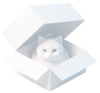

¿Por qué?
Como tester, nos ayudas a detectar y corregir errores para que estén listos para su lanzamiento oficial.

Abrir el proyecto a la comunidad diversifica y amplia los enfoques de nuestro contenido, permitiendo que la ciencia pueda llegar a más personas.
Vas a ser parte de El Gato y La Caja, proporcionando feedback que influirá en nuestras decisiones. Además de experimentar, antes que nadie, las mejoras que estamos preparando.
/Entender el mundo
¿Cómo ser Gato_Tester?
Completá el formulario para que
podamos conocerte mejor.
Revisá tu mail, para encontrar
tu primer prototipo.
02
Dejanos tus opiniones cuando
termines el experimento.
> Darle forma
Formá parte
del equipo.
Feedback
de nuestros testers.

“Es mi grano de arena para cambiar el mundo / Todo su contenido me ayudó a tener una visión más clara del mundo. / Porque las ciencias, las artes y las humanidades son lo único que pueden evitar que nos extingamos”
-Múltiples usuaries
Encuesta permanente a Testers
“Porque necesitamos de manera urgente la difusión de información confiable, basada en evidencia y datos. Confío en que son un camino para generar un quiebre en la forma en que consumimos información y tomamos decisiones.”
-Agustín Sande
Encuesta permanente a Testers
“Soy tester porque me encanta leerlos, escucharlos y verlos. Generan una comunidad muy positiva de la que quiero ser parte. Este tipo de iniciativas me dan esperanza en nuestro futuro como humanidad.”
-Sofia Perechodnik
Encuesta permanente a Testers
“Veo a Gato como una herramienta para que la gente pueda acercarse a la ciencia. Ver gente haciendo y hablando de ciencia con tanto amor y sencillez, hace que la sociedad se contagie de argumentos científicos. Eso para mí es TODO.”
-Pablo Pilotti
Encuesta permanente a Testers